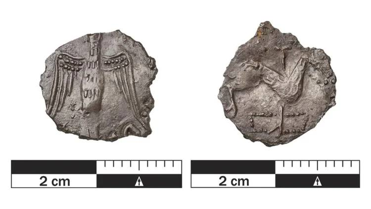
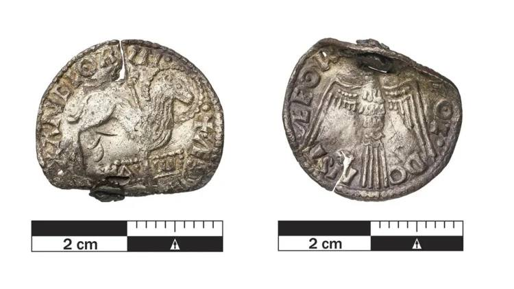

Na época da fundação da nacionalidade, que considero como todo o período que vai desde a assumpção do condado portucalense por Teresa e Henrique, até ao início da consolidação do reino por D. Afonso III, a "Hispânia" era conhecida como sítio onde reinava a superstição.
Talvez daí o facto, que exponho num artigo que tenho no prelo, de uma infanta portuguesa ser expressamente associada ao uso das "sortes". E talvez daí também a profusão de signos apotropaicos que, no fundo, protegiam do mal.
Assim, pode o dinheiro de estrela de cinco pontas de D. Afonso Henriques constituir na verdade um pentáculo, como referi num artigo publicado na Revista Moeda.
Estas ideias, no entanto, não são exclusivas do espaço português, sendo melhor compreendidas fora de portas do que na terra que viu nascer Camões.
Assim, fácil será de entender que o uso de um objecto apotropaico pressupõe o conhecimento da sua significação iconográfica.
Vale a pena ler este artigo da Archaelogy News Online Magazine, publicado em 10 de Maio de 2026, e da autoria de Dario Radley, cuja tradução em português é oferecida por intermédio do Google Translate:
MOEDAS INGLESAS DE 1.000 ANOS, CUNHADAS PARA COMBATER OS ATAQUES VIKINGS, FORAM ENCONTRADAS NA DINAMARCA
Duas raras moedas de prata encontradas na Dinamarca oferecem uma visão incomum da relação entre os invasores vikings e a Inglaterra cristã no início do século XI. Os pequenos artefatos foram originalmente criados como objetos religiosos destinados a proteger a Inglaterra dos ataques vikings, mas as evidências arqueológicas mostram que os vikings os transformaram em ornamentos pessoais.
As moedas foram descobertas recentemente por detectoristas de metais no norte e no sul da Jutlândia. Ambas pertencem a um raro tipo de moeda inglesa cunhada em 1009, durante o reinado do rei Etelredo II, frequentemente conhecido como Etelredo, o Despreparado. Na época, a Inglaterra enfrentava repetidas invasões vikings, ataques e exigências de tributo.
Em resposta, Etelredo instituiu o jejum público e atos de penitência, além de ordenar a produção de uma moeda especial com forte iconografia cristã. O desenho diferia da moeda inglesa padrão da época, que geralmente apresentava o retrato do rei de um lado e uma cruz do outro.
Essas moedas incomuns, conhecidas como moedas do "Cordeiro de Deus" ou Agnus Dei, apresentavam um desenho muito mais simbólico. A frente mostra um cordeiro transpassado por uma cruz, representando o sacrifício de Cristo. Abaixo do cordeiro, aparece uma placa com as letras gregas alfa e ômega, símbolos de Deus como o princípio e o fim. O reverso apresenta uma pomba alçando voo, uma imagem associada ao Espírito Santo.
O propósito protetor das moedas não parece ter produzido o resultado esperado. Os ataques vikings continuaram e muitas moedas inglesas foram levadas em incursões, pagamentos de tributos ou trocas comerciais. Em vez de rejeitarem esses objetos fortemente cristãos, os vikings parecem tê-los valorizado por outros motivos.
Arqueólogos observam que muitas moedas com a imagem do Cordeiro de Deus encontradas na Escandinávia incluem argolas anexadas, sugerindo que foram modificadas para serem usadas como pingentes, colares ou amuletos. Esse padrão aponta para uma mudança cultural na forma como os objetos eram compreendidos após saírem da Inglaterra.
Apenas cerca de 30 exemplares dessas moedas foram identificados em todo o mundo. Surpreendentemente, apenas quatro ou cinco foram encontrados na Inglaterra. A maioria dos exemplares conhecidos provém da Escandinávia e da região do Báltico, o que torna as descobertas dinamarquesas especialmente importantes.
Segundo especialistas do Museu Nacional da Dinamarca, as moedas também refletem uma mudança econômica mais ampla durante a Era Viking. O contato com a Inglaterra expôs os governantes escandinavos a um sistema monetário mais organizado. Com o tempo, as sociedades vikings adotaram cada vez mais o sistema de trocas baseado em moedas, em vez de dependerem principalmente de fragmentos de prata para o comércio.
A influência inglesa tornou-se visível posteriormente na cunhagem dinamarquesa. Reis como Canuto, o Grande, seu filho Harthacnut e, mais tarde, Sueno Estridsson produziram moedas inspiradas em desenhos ingleses, incluindo motivos semelhantes aos encontrados no tipo Cordeiro de Deus.
As moedas dinamarquesas recém-descobertas conectam diversos acontecimentos históricos importantes em um único objeto. Elas relacionam as respostas da realeza inglesa à invasão, a disseminação do cristianismo, a mobilidade viking pela Europa e o surgimento da cunhagem organizada na Escandinávia.
Embora as moedas tenham sido criadas como proteção espiritual contra os exércitos vikings, seu uso posterior conta uma história bem diferente. Objetos destinados a defender a Inglaterra de invasores acabaram viajando para o norte, onde os vikings os usavam como itens decorativos ou amuletos de proteção. Essa ironia tornou essas pequenas peças de prata um dos achados mais incomuns relacionados à história da Era Viking.
LEGENDAS DAS IMAGENS
1-Gitte Tarnow Ingvardson com uma das moedas. Crédito: John Fhær Engedal Nissen, Museu Nacional da Dinamarca.
2-Foto de uma das moedas, encontrada no norte da Jutlândia. Crédito: Søren Greve, Museu Nacional da Dinamarca.
3-Foto de uma das moedas, encontrada no norte da Jutlândia. Crédito: Søren Greve, Museu Nacional da Dinamarca.